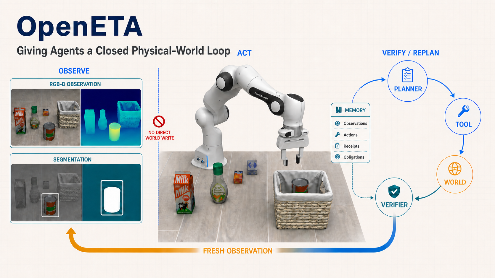
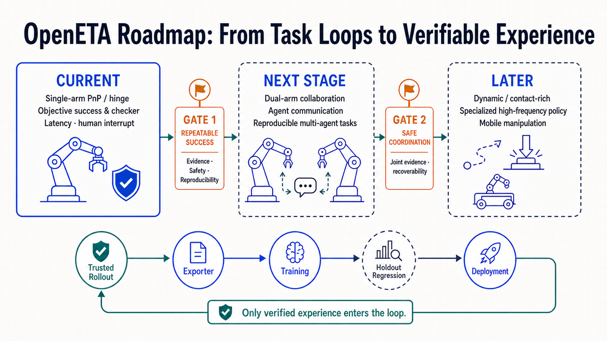

想象这样一个任务：让机器人把一个罐头放进篮子里。对人来说，这似乎只是“看一眼、伸手、抓住、放下”；对机器人而言，每一步都可能出错：看到的是不是当前画面，找到的是不是指定目标，抓取位姿是否来自正确的相机和坐标系，夹爪闭合后物体是否真的被抓起，网络超时前后的世界又是否已经发生变化。
真正困难的地方，不只是让模型“说出一个动作”，而是让它知道动作之后世界究竟发生了什么。因此，未来的具身智能不应只是一个更大的模型，而应是一套由智能体模型、工具、运行时、环境回执和验证机制共同组成的系统。模型负责理解任务并提出意图，系统负责执行、核对状态，并推动下一步决策。
任务级闭环
不是一次性输出动作序列，而是在每次环境变化后重新观察、判断和规划。
执行权分离
Agent 提出意图，Interface 验证权限与证据，Simulator 或 Robot 决定真实状态。
可信证据
工具调用完成、世界状态改变和任务成功是三种不同主张，必须分别记录和验证。
VLA、WAM 进展迅速，但动作预测还不是任务闭环
具身智能的一条核心路线，是从大规模数据中学习“观察到动作”的映射。模仿学习从人类演示中学习动作分布；视觉—语言—动作模型（VLA）利用预训练视觉语言模型理解场景和指令，再预测机器人动作；世界动作模型（WAM）进一步预测未来观测，用世界模型帮助规划下一步动作。
这些能力会继续成为具身系统的重要模块，但真实环境不会按训练数据演进。机器人数据采集昂贵，场景、光照、相机、物体和人的干预持续变化；大模型的理解能力与实时控制之间存在张力；更重要的是，动作输出并不自动等于任务完成。一个接口返回 success=true，通常只能说明调用结束，并不能证明物体已被抓起、保持附着并最终放到正确位置。
因此，VLA 和 WAM 可以为系统提供感知、短程动作或未来状态预测能力，但还需要一个任务级智能体管理目标、工具、工作记忆、长程决策、失败恢复与成功验证。
ETA：把数字智能体的闭环迁移到物理世界
具身任务智能体（Embodied Task Agent，ETA）的出发点，是将数字世界中已经出现的“理解任务—调用工具—接收反馈—继续决策”闭环迁移到物理世界。它不让模型直接控制整个世界，而是为模型提供一组边界清晰、可验证、可审计的原子能力。

这条路径包含一条关键运行时不变量：
一次只执行一个会改变世界的动作；动作之后，必须取得新观测，才能执行下一个依赖当前状态的动作。
这条规则看起来保守，却是物理闭环能够成立的基础。模型不能一次性提交一长串不可观测的动作，也不能在动作之后继续假设“世界仍然和刚才一样”。如果拿不到规范的新状态快照，系统就建立观测义务，必要时停止任务，而不是让模型用旧画面继续猜。
OpenETA：开源具身任务智能体框架
OpenETA 是一个面向具身任务的开源智能体框架。它把基础模型、工具、技能、宿主运行时、仿真器或机器人以及评测机制组织成完整系统，让智能体围绕任务持续运行“观察—决策—行动—验证”闭环。
OpenETA 将系统拆成三个角色：
- Agent：理解任务、维护工作记忆、选择工具并提出下一步结构化意图；
- Interface：掌握执行权，验证工具契约、参数、权限、安全门控、来源与前置证据；
- World：真正改变世界的仿真器或机器人，并返回状态、奖励、终止条件或检查器结论等可信证据。
可以把三者概括为：Agent 负责“想做什么”，Interface 负责“能不能做”，World 负责“实际上发生了什么”。这种边界把模型的知识与系统的执行权分开：技能可以告诉模型抓取前要确认目标、放置后要验证关系，但移动、夹爪闭合和释放仍必须作为可审计的原子动作出现在轨迹中。
在工程上，OpenETA 通过稳定的 Tool 与 MCP 接口连接感知、抓取、放置、运动控制、仿真和真机后端；Tool 由宿主持有，并标注只读、规划、记账或改变世界等副作用等级；Skill 是模型可读、可编辑的经验指导，不会在背后隐藏执行动作。会话工作记忆与不可变 rollout 分开保存，使成功、失败和不确定状态都可以回放与复查。
一次抓放，其实是一条证据链
以“把 alphabet soup 放进篮子”为例，机器人首先要解决的不是“怎么抓”，而是任务说的究竟是哪一个物体。在多个相似包装中，一个分割质量很高的蒙版也可能指向错误实例。OpenETA 会先检索受控的目标参考，再把参考外观与当前场景对齐；候选蒙版只能用于排序，不能直接解除目标确认义务。
即使夹爪闭合，也不能立刻宣布抓取成功。系统还要检查目标是否随末端共同运动、原位置是否空出、当前观测是否与相机参数和场景版本一致。释放后，视觉上“看起来放进去了”也不是最终结论；任务成功必须落到可信环境的 reward、termination 或任务 checker 上。

在冻结协议下报告成功，也完整保留失败
OpenETA 的完整基线在 LIBERO Spatial、Object、Goal 和 Long / LIBERO-10 四个 suite 上评测 40 个任务，每个任务使用 10 个预注册 seed，共 400 个 episode。所有 episode 使用相同的冻结工具契约和只读策略，不加载评测期间产生的经验，也不允许人工或 Agent assistance；只有可信环境回执中的 LIBERO 官方正奖励才计为成功。
| Suite | 成功 episode | 成功率 |
|---|---|---|
| LIBERO Spatial | 8 / 100 | 8.0% |
| LIBERO Object | 26 / 100 | 26.0% |
| LIBERO Goal | 21 / 100 | 21.0% |
| Long / LIBERO-10 | 1 / 100 | 1.0% |
| 总体 | 56 / 400 | 14.0% |
完整基线的 56 次成功都由官方正奖励确认。Object 与 Goal 的点估计高于 Spatial，而 Long / LIBERO-10 只成功 1 次，说明长时程子目标跟踪、动作后的感知复查、放置关系判断和预算协调仍是主要瓶颈。项目页同时公开保留基础设施边界：3 个 LIBERO-10 episode 受模拟器 TTL 到期影响，仍按失败计入，因此这组结果应被理解为描述性基线，而不是已经排除基础设施干扰的确认性结论。
2026 年 8 月发布的 OpenETA for Codex 则把 Codex TUI 通过类型化工具和版本化 Operator 上下文接入 LIBERO。使用 gpt-5.6-sol、medium reasoning effort，在 130 个 LIBERO 任务上取得 70.8% Pass@1 和 90.0% Pass@5。随着重试预算增加，任务覆盖率显著提升；同时，更强的推理能力也转化为更高的具身闭环任务覆盖率。
从仿真到真机：迁移的是闭环，不是动作序列
OpenETA 不把具身智能绑定到某一个仿真器或机械臂。智能体接收标准化观测并提出结构化动作意图，运行时通过后端适配器把观察、移动、抓取和释放等工具调用转换为具体控制指令。只要不同后端保持一致的工具语义，ETA 层的任务拆解、工作记忆、技能、失败恢复和验证流程就可以复用。
因此，从仿真迁移到现实世界的不是一条在仿真中记住的动作序列，而是一套任务级闭环：目标描述、工具契约、宿主门控、新观测义务、检查流程和轨迹记录。迁移时主要替换底层执行后端，并重新完成相机、坐标系、运动控制器与夹爪的设备标定。

下一步：把可信轨迹变成可验证的经验
OpenETA 已经把多模态规划、原子工具、文本技能、会话级工作记忆、仿真与真机接口、并行评测和不可变轨迹串成可复现闭环，但它远不是已经完成的通用具身智能方案。长时程任务、多物体关系、释放时机、附着稳定性、双臂协同、动态接触和移动操作都仍需要更可靠的工具与检查器；真机安全、控制频率、急停、传感器标定与负载限制也不能由仿真结果直接推出。

未来，VLA 和 WAM 也可以成为 ETA 按需调用的高级能力：VLA 提供短程动作建议或可复用操作技能，WAM 预测未来状态并比较不同计划；任务级智能体根据目标和当前证据决定何时调用，宿主运行时仍负责执行门禁与动作后验证。VLA、WAM 与通用智能体因此不必相互替代，而可以组成能力更强、边界更清晰的具身智能系统。
大家期待的具身智能“ChatGPT 时刻”，也许不会只来自一个突然变大的模型。它更可能来自这样一套系统：理解任务，调用工具，读取可信反馈，在每次改变世界后重新观察，并把成功与失败沉淀成可验证、可复用的经验。